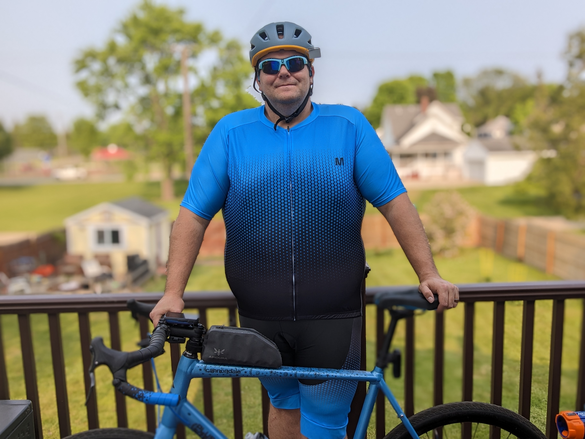
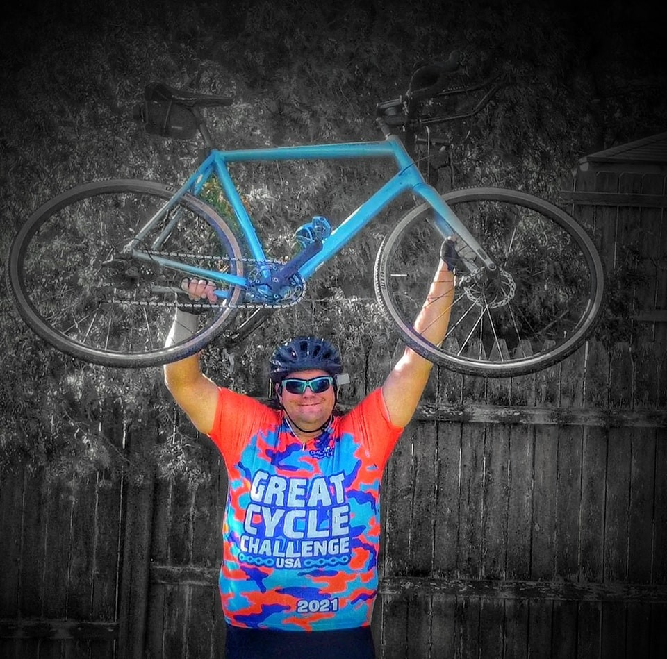
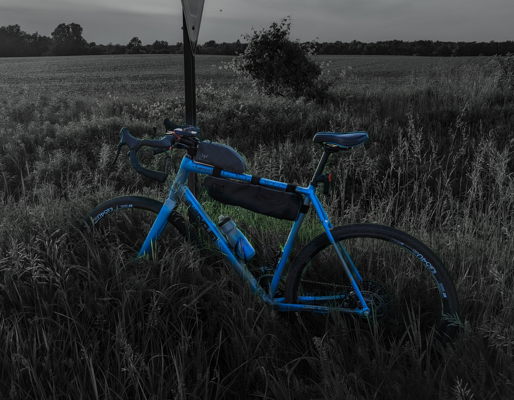

Welcome to The Plus Sized Cyclist
A place for riders who do not fit the traditional cycling mold. This site shares Cody's journey getting fit on two wheels and encourages others to ride as they are.
Welcome!
Greetings! My name is Cody Dean and I am The Plus Sized Cyclist. This page is a home for my journey to get fit by way of two wheels, along with product reviews and tips for riders like me.
I am 6'4" and started this journey at about 360 lbs. I did not see many resources for cyclists built like me, so I created this space to show that atypical cyclists belong on the road and on the trail.
My early rides were only a few miles, and every mile mattered. Over time my range grew, my fitness improved, and my love for cycling only got stronger. If you are starting from zero, you are in the right place.

About Cody
Why "Plus Sized Cyclist?" At 6'4", I started this project around 360 lbs and found very few cycling resources that spoke directly to bigger riders.
I rode "box store" bikes for years, then invested in myself with a proper local bike shop bike. That process came with challenges, but it changed everything.
This site is here to show that you do not need a typical cyclist body type to belong in the sport. If a bike helps you move forward, you belong.

Bike Specs
- Cannondale Topstone 4 AL
- DTSwiss G540db Wheelsets
- BiSaddle SRT 2.0
- Archer Components D1X Electronic Shifter
- JUIN TECH GT-F CX Hydraulic Brake Conversion
- Redshift Kitchensink Drop Bars
- Hammerhead Karoo 2 Computer
- Magene L508 Bike Radar Tail Light
- Blackburn Dayblazer Bike Front Light

Strava
Recent training and rides on Strava.
Follow recent posts from @plussizedcyclist.